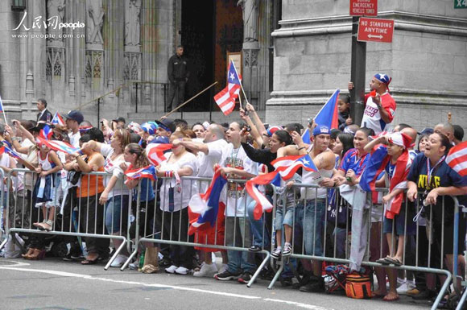
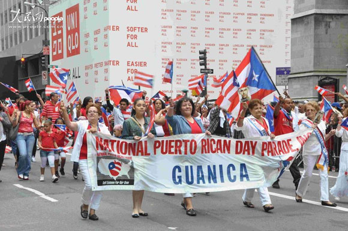

The people and ethnicity of Puerto Rico
The people of Puerto Rico
the population of the Puertorriquenos is about 367.4 million. Most of them are the offspring of The Spanish and the Portuguese, and they occupy seventy six point two percentage of the population. The Puertorriquenos is the generic term of citizens which located on the Caribbean area in the central America.
Their main language is Spanish and English, and most of them believe in the Catholic. The earliest citizen in Puerto Rico was the Arawak and the Caribbean Indian.
In the beginning of the 16th century, the Puertorriquenos was ruled by the Spanish. At the midterm of the 16th century, the aborigine was almost extinct. After that, the black people entered the Puertorriquenos. In the beginning of the 19th century, the people from Spain, France, Europe and the other countries massively immigrated into the Puerto Rico.
the racial makeup of Puertorriquenos found them to be roughly around 61% West Eurasian (overwhelmingly of Spanish provenance), the twenty seven percentage Sub-Saharan African and 11% Native American.Another genetic study from 2007, claimed that "the average genome wide individual (i.e.. Puerto Rican) ancestry proportions have been estimated as 66%, 18%, and 16%, for European, West African, and Native American, respectively.
Puerto Ricans was, on average, 72.2% West Eurasian (49% European, 18.3% Saharan-Arabian, 4.9% West Asian), 12.7% Native American, 12.5% Sub-Saharan African, and 1.4% Northeast African.
The ethnicity of Puerto Rico
The mediterranean was one of the calcification of the white people in the 20th century. They distribute the range form the southwest of Ireland, Southern Scotland, British West, Wales, and some places in Eastern Europe, southern Europe, North Africa, East Africa, the northeast Africa and the Middle East to India.
It is the subspecies of European race. They mainly distributed in southern Europe, North Africa, the Middle East and India.
Their skin color, hair color, and eye color were all very deep. The have the way hair, Tall and narrow snout, a narrow and long face, Dolichocephalic and short.
Mainly divided into the Atlantic'97Mediterranean type (also known as the eastern Mediterranean type) and the India Mediterranean type( Eastern Mediterranean type.)The Atlantic Mediterranean type, mainly distributed in the coastal areas of the Mediterranean . India Mediterranean type, also known as the eastern Mediterranean type, mainly distributed in the Arabian Peninsula, the Iranian Plateau and the Indian subcontinent. Huxley also the mediterranean race(Mediterranean) as a mixed type between the European race and the Australia race.
'93Mediterranean'94 mainly distributed in Spain, Portugal, southern Italy(In the northern Italy distribute the part blond and blue eyed withe people) Greece, and other country.
 